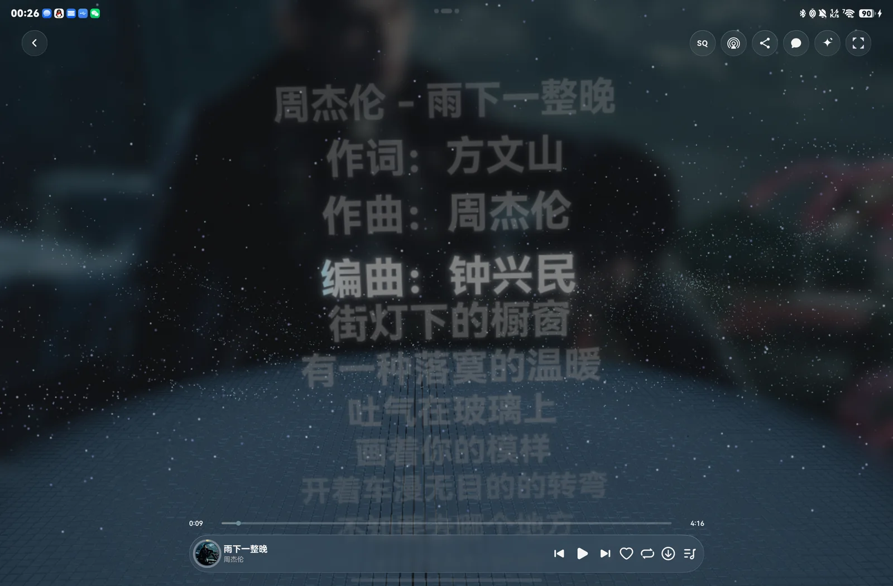
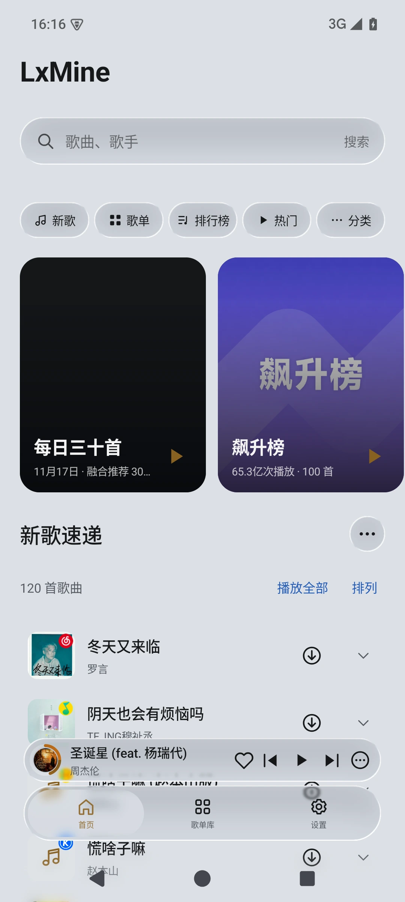
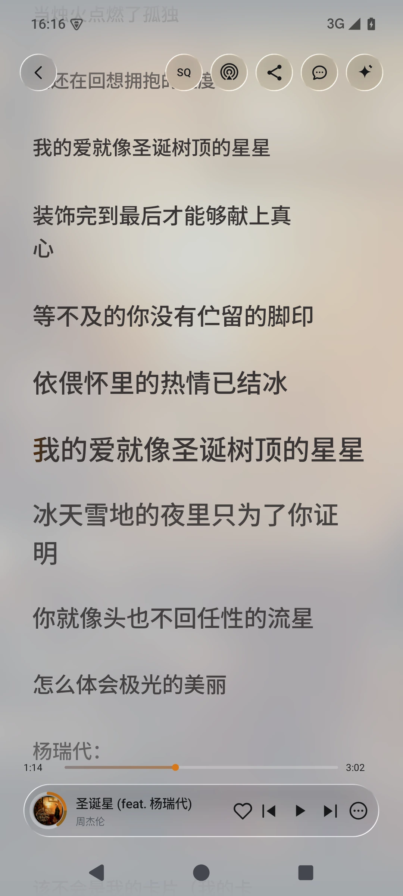
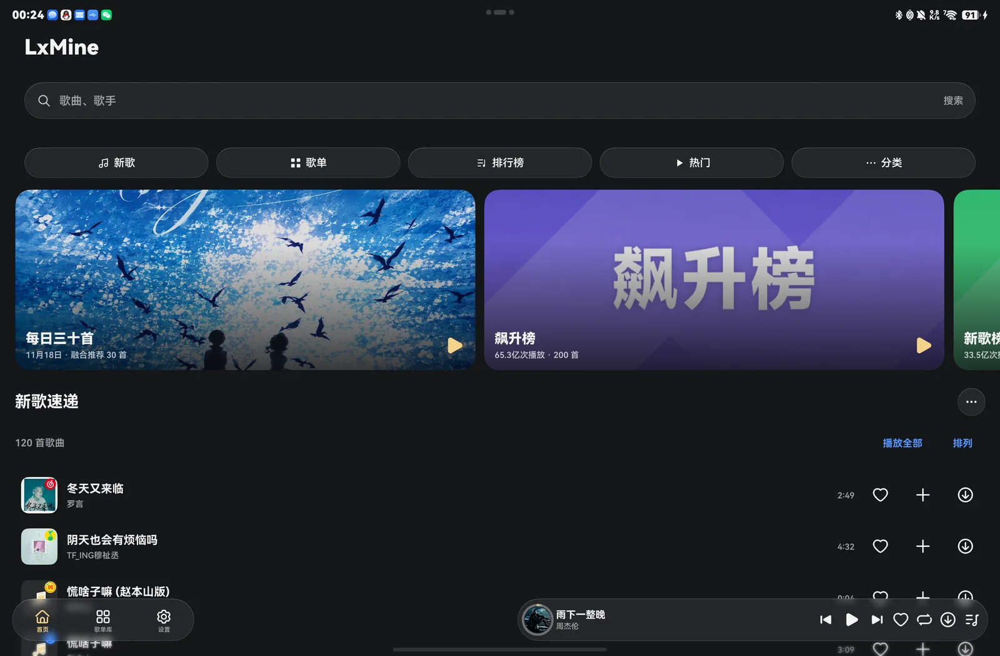

01 / OPTICAL LENS
SVG 边缘折射与环境取色
独立光学皮肤层实时采样背景色彩并计算弯月面边缘折射。玻璃随背景流动变幻，而上层文字与图标始终保持零畸变、像素级锐利。
跨越 Windows、HarmonyOS 与 Android 的次世代开源音乐播放器。
当 3D 粒子地形随节拍起伏，逐字流光歌词穿透光学折射玻璃——每一首歌，都是一场私人光影现场。

下方搭载了与 LxMine 桌面端完全同源的 hx-glass 实时光学折射皮肤与弹簧物理引擎。试着按住并拖动底部的液态玻璃播控胶囊，或点击任意歌词行切换焦点。
独立光学皮肤层实时采样背景色彩并计算弯月面边缘折射。玻璃随背景流动变幻，而上层文字与图标始终保持零畸变、像素级锐利。
每一次点按、拖拽与释放都由物理弹簧驱动形变回弹；径向掠射高光沿控件轮廓游走，松手即归于克制。
既能展开 3D 粒子地形与电影镜头，也能在播放页随时点按星芒键「关闭动效」，切换为低功耗柔和封面与左对齐逐字歌词。
不是简单的网页套壳，而是针对每个系统深度打磨的交互体验：Windows 无边框光学桌面、HarmonyOS 原生全场景流转、Android 13+ 液态玻璃水球导航。
基于 ArkTS 原生开发，完整适配 HarmonyOS 手机、平板横屏大视野与 HiCar 车机体验。支持华为生态应用接续与局域网跨设备歌单同步。


纯正 Kotlin 与 Jetpack Compose 编写，最低兼容至 Android 8.0。在 Android 13 及以上设备解锁实时液态玻璃折射与按压水球底部导航。


融合 Mineradio 电影级镜头舞台与华为式 PC 沉浸光感规范。圆角无边框窗口、锚点毛玻璃菜单与常驻流光底栏，让桌面听歌充满仪式感。
Setup.exe 安装版与即开即用的 Portable.exe 便携版
告别在四五个音乐客户端之间疲于奔命。LxMine 将公开榜单聚合、自定义音源扩展、歌单导入与本地无损曲库熔铸进同一套纯净界面。
并发拉取网易云、QQ 音乐、酷狗、酷我四大平台榜单，按「飙升 / 新歌 / 热歌 / 原创」智能交错去重，按日期种子生成每日专属三十首推荐。
支持批量导入社区通用的 .js / .txt 音源脚本，自动跳过重复项并生成逐文件诊断报告。软件本身不捆绑音源，一切由你做主。
相册“时刻”式随机几何比例拼贴封面，每次洗牌皆成画报。所有歌曲列表标配「列表内秒搜」与「长按/鼠标拖拽手动排序」。
一键智能识别电脑与手机中的本地音频，完整解析 FLAC / MP3 标题、歌手、内嵌高清封面与内嵌歌词；下载完成的歌曲自动入库。
内置中国大陆双线公共加速镜像与 GitHub 官方源直连。所有通道指向同一官方构建产物，随时可核验 SHA-256 指纹。
默认启用 GH-Proxy 高速镜像，并提供 GHFast 备用线路。若某一节点繁忙，一键切换即可满速下载，无需额外网络工具。
Windows 10 / 11 · x64
安装包尚未进行商业代码签名，Windows SmartScreen 若提示“未知发布者”，点击“更多信息 → 仍要运行”即可。
以下 SHA-256 哈希值同步自 GitHub Release 官方构建记录，镜像下载与直连下载完全一致：
fb2b31321b190e89bcf1409265e523fc19447297d7f4468fb705c74de849d8ec
LxMine 站在开源社区的肩膀上诞生，坚持透明、克制与纯粹的本地掌控权。
打开应用后进入「设置 → 音源」，多选导入你自行获取的 LX Music 兼容 .js 或 .txt 自定义音源脚本，启用后即可跨平台搜索与播放。本官网与所有安装包均不内置、不分发任何第三方音源脚本。
下载面板默认已选中「中国大陆加速 · GH-Proxy」镜像通道，无需任何代理即可高速下载。如遇晚高峰拥堵，一键切换至「GHFast 备用镜像」即可；下载后可展开 SHA-256 指纹进行一致性校验。
手机 / 平板 / 2in1 用户优先推荐点击下载区的「华为应用市场 1.1.0 邀请测试」（用鸿蒙系统自带浏览器打开链接），免签名一键安装更新。车机 HiCar 或本地折腾用户可下载未签名 HiCar-unsigned.hap，使用自动签名工具或 DevEco Studio 签名后安装，详阅 GitHub 仓库安装指南。
全部客户端与光学材质标准包源码均托管于 GitHub (YuriLin1028/LxMine)。遇到问题欢迎前往 GitHub Issues 附上系统版本与复现步骤，也欢迎提交 Pull Request 共建。